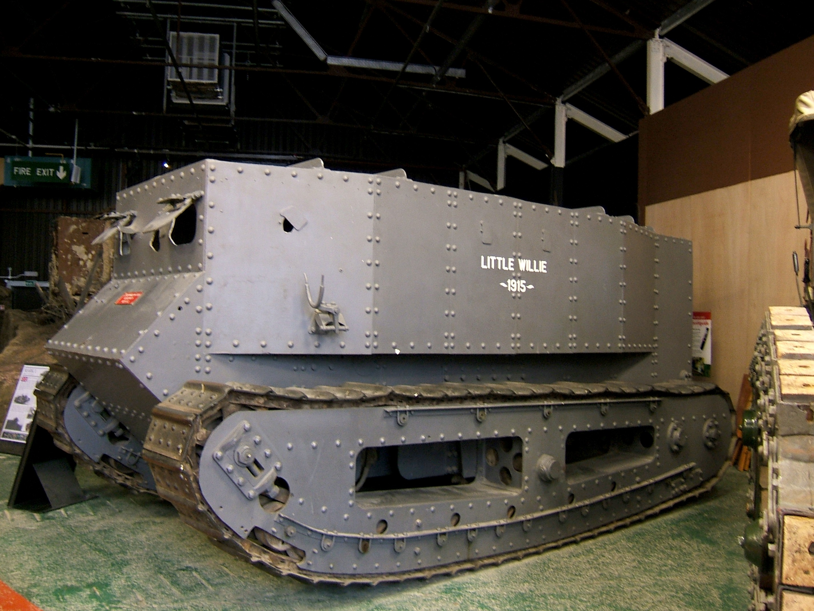

Brief History

The first ever tank created was a prototype tank called "Little Willie". The first tank ever was created in England as an answer to trench warfare. However the first tank was not as perfect as you think. The tank weighed 14 tons, got stuck in trenches adn crawled over rough terrain at only 2 miles per hour (3.22 Kilometres per hour). After realizing how bad the tank was, they started improving him immediately. Second prototype was called "Big Willie" and by 1916 the tank was immensely improved and deemed ready for a battle. Most of the tanks still had a problem that they were slow, became overheated and could not cross trenches.